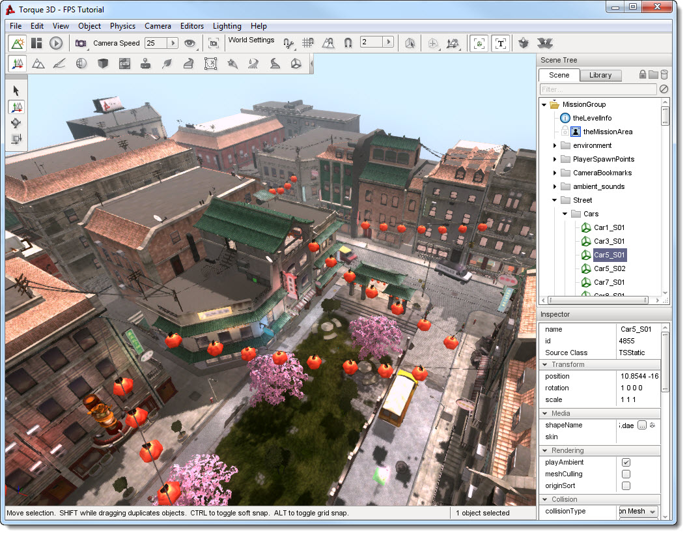
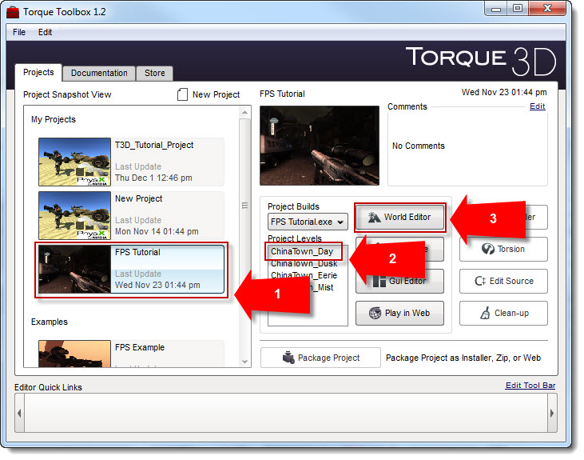

Purpose
The World Editor is used to build and edit game levels. This includes adding and modifying terrains, buildings, foliage, cloud layers, vehicles, environmental effects, lighting effects, and much more. Aside from the Toolbox, the World Editor is the first (and most important) tool a new user should learn.
A sample game level as seen inside the World Editor:
(click to enlarge)

The World Editor is not a tool for creating game objects. Objects must be created using applications appropriate for the object type (i.e., 3DS Max to create a 3D model). However, once an object is loaded it can be modified by the World Editor in a variety of ways. The simplest modification would be a change in scale (size), but more complex modifications are also possible. For example, the Torque Material Editor can be used to alter (or completely replace) textures on a 3D object or add shader effects.
A typical World Editor workflow might go as follows (in very simplified terms):
- Create a 3D model in an application like 3DS Max, Maya, or Blender.
- Save that model to a sub folder inside your game/art directory.
- Launch World Editor (which will automatically find that model if step 2 was done correctly).
- Add the model to your level; position, scale, rotate, and adjust its materials as desired.
- Test your changes in-game with the push of a single button.
- Return to the World Editor and continue to tweak your level.
Of course, there is a lot more to the World Editor than positioning 3D models. You will also be working with 2D assets like grey scale height-maps to create terrains, as well as specialized tools for creating rivers, forests, and roads.
Finally, it is worth noting that Torque 3D includes numerous art assets for you to play with… so you can skip steps 1 and 2 above and start building game levels right away!
Using the World Editor Documentation
The World Editor documentation follows a logical progression. Those who wish may work through it in a methodical way. Others may choose to skip difficult sections and jump directly to the tutorials at the end or to focus on only the features of interest.
Everyone learns differently, but we've found that a good way for new users to get started quickly is to follow these three steps:
- Continue reading this document ("Overview") in its entirety. It covers: how to launch the World Editor, how to look and move around in a game level, and it offers a few important tips for new (and experienced) users.
- With the World Editor open, quickly skim the next document, "Interface". You should only spend five-to-ten minutes getting an initial feel for the basic layout of the interface. Do not try to learn any features in detail.
- Try to add moving clouds to your level by following the Basic Cloud Layer instructions. Whether you are successful or not, spend no more than five minutes on this task.
Do not be concerned if you have trouble completing Step 3. Its purpose is to give you a specific task that requires direct interaction with the interface. That small exposure to the interface will go a long way towards making the remainder of the documentation more meaningful and easy to follow.
Once you've completed the three steps above, how you proceed is up to you. For those who prefer to jump around, we recommend you start by carefully reviewing the Interface document.
How to Launch the World Editor
There are two ways to open the World Editor: (1) by using the Torque 3D Toolbox utility or (2) by using hot keys from within a running Torque game. You will likely use both methods during development.
Launching from the Toolbox
The first method is to open the World Editor using the Torque 3D Toolbox utility. As described in the Toolbox documentation: select a project, select the Project Level you would like to edit, and click on the World Editor button.
(click to enlarge)

Launching from Within a Running Game
While your game is running, you can open or close the World Editor at any time using hot key combinations:
- On Windows, to open or close the World Editor, press the F11 key.
- On Mac OS X, to open or close the World Editor, press CMD+FN+F11.
TIP: When you first launch the World Editor, it is likely you will do so from the Toolbox. However, after you have modified your level, if you decide to test it out by clicking the Play Game button (as described in the "Interface" document ), you will need to use the F11 hotkey to get back to the World Editor. Otherwise, you would be forced to quit your game and relaunch the World Editor from the Toolbox.
Looking and Moving Around
While working in the World Editor, you will need to move and look around to inspect your level.
- Forward/Back/Left/Right movement is controlled by the corresponding arrow keys on your keyboard (the WASD keys can also be used). If you have a mouse-wheel, it can be used to move forward or backward.
- Look Left/Right/Up/Down by holding the right mouse button down while moving the mouse.
- Pan Left/Right/Up/Down by holding down the middle mouse button (Mouse 3) while moving the mouse. On most mice with a scroll wheel, this is achieved by depressing (not scrolling) the mouse wheel.
Note: There are a number of Camera options, discussed further in the Interface document, which in some cases may alter the behavior of these controls in minor ways.
When play testing your game outside of the World Editor, default control is typical of most First Person Shooters and can be remapped by pressing Ctrl-O (Windows) to bring up an options dialog. A few important controls are listed below:
- Forward/Back/Left/Right movement is controlled by the corresponding arrow keys on your keyboard (the WASD key can also be used).
- Look around by moving the mouse.
- Fire/Alt Fire are triggered by the left and right mouse buttons.
- Jump is activated by the Space Bar.
- First/Third person view is toggled by pressing TAB.
- Change weapons by scrolling the mouse wheel (or press Q key).
- Exit vehicles by pressing Control-F.
- Return to World Editor by using the F11 hotkey (as discussed above).
Tips
The following is a general list of knowledge you should keep in mind while editing a level in your game:
- Try to design your levels outside of the editor first. Sometimes it is helpful to have a simple verbal or visual design ready before you actually start editing. Even if it is a simple blueprint on a napkin, a level editor/artist with a reference to work from will cover ground much more quickly.
- Prioritize your object placement. It makes sense to polish certain aspects of a level before others. For example, try to finish your Sky, Sun, and Terrain before you move on to adding rivers, foliage, and other objects. Performing major adjustments to a terrain with hundreds of objects already placed could be tedious and counterproductive.
- Play your level regularly. After you reach a major milestone, try actually doing the things in your level as a player would. There is a big difference between the experience of a player in a game and that of a designer with a free-floating camera in the World Editor.
- Do not forget to optimize. Some specific World Editor objects are more appropriate than others. Use Ground Cover instead of a 3D model with lots of grass or trees attached. As much as possible, use the Sun rather than numerous point lights to handle ambient lighting. There are other such optimizations which will become apparent towards the end of development.
- SAVE AND SAVE OFTEN. This cannot be stressed enough. Computers crash, power goes out, cats jump on keyboards, and in rare circumstances you may encounter a yet undiscovered issue which causes data corruption. Any number of accidents can result in hours of work being lost. We recommend you save as often as you can.
Conclusion
Now that you know the purpose of the World Editor, and how to access it,
we can move on to learning how to use it. Before you start placing
objects or creating levels, you should learn the interface.
Continue on to the World Editor Interface.
|
{kind=link}
{kind=link}